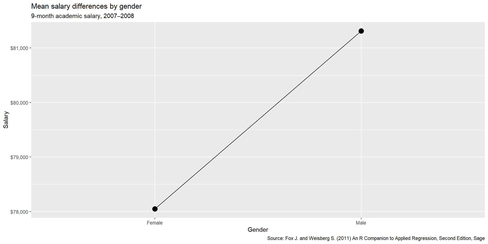
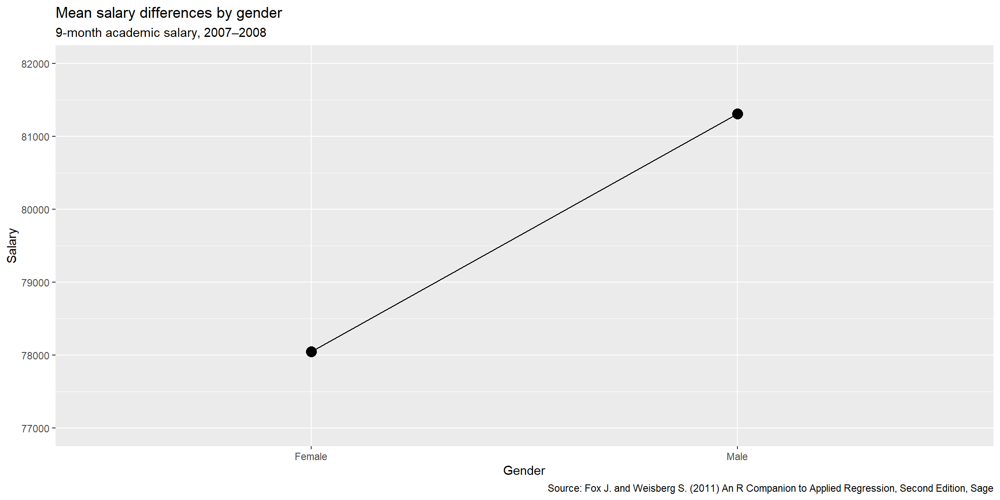
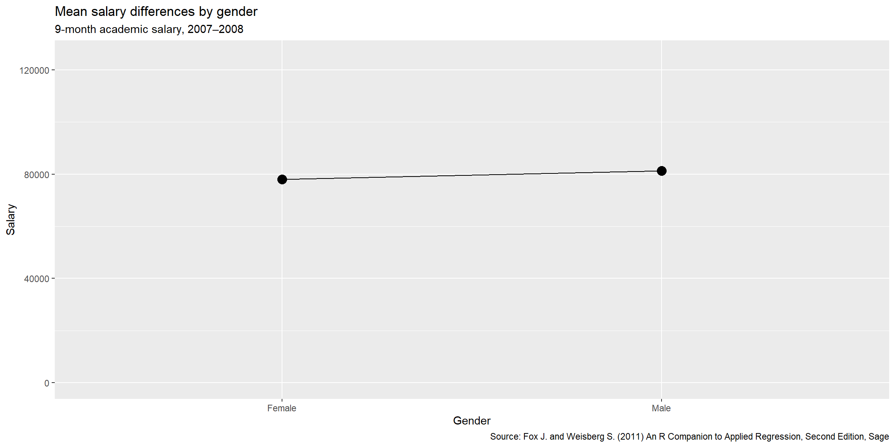
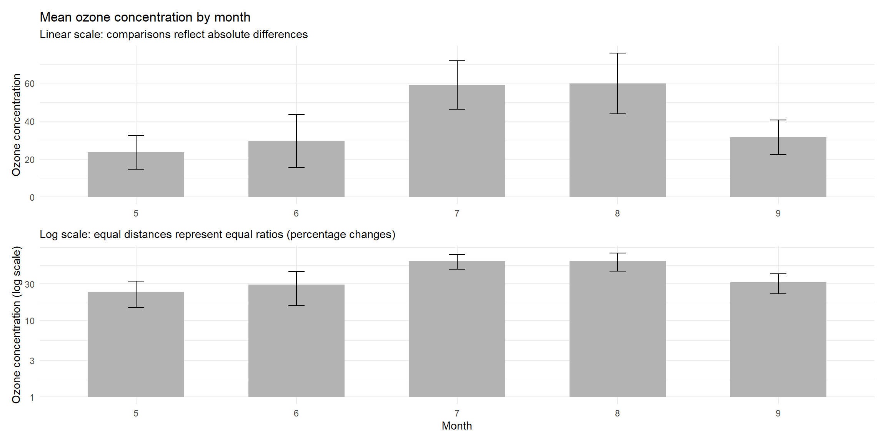

Code
# Import relevant libraries
library(ggplot2)
library(dplyr)
# Setup of the dataframe for plotting use
mpg_summary <- mtcars |>
mutate(cyl = factor(cyl)) |>
group_by(cyl) |>
summarise(mean_mpg = mean(mpg))In this section, we go through what makes a good data visualization. These come from the lecture material for ST231, ST237, ST346, and ST404.
Everything on your graph should be clearly labeled. In general, a graph contains:
title — a clear short title letting the reader know what they’re looking at
Example: Relationship between experience and wages by gender
caption — a short description of the graph and, where necessary, the source of the data
Example: A star plot showing the different characteristics of reviewed wines. Source: https://www.kaggle.com/datasets/zynicide/wine-reviews/data
axis labels — clear labels for the x and y axes
legend — short informative title and labels
Example: You can do this with the legend() function in R before or after the plot() you with to add a legend to
lines and bars — label any trend lines, annotation lines, and error bars
Essentially, the reader should be able to understand your graph without having to wade through paragraphs of text. When in doubt, show your data visualization to someone unfamiliar with your assignment and ask them if anything is unclear.
In data science, the goal of data visualization is to communicate information. Anything that doesn’t support this goal should be reduced or eliminated entirely.
Let us now go through an example of chart junk.
# Import relevant libraries
library(ggplot2)
library(dplyr)
# Setup of the dataframe for plotting use
mpg_summary <- mtcars |>
mutate(cyl = factor(cyl)) |>
group_by(cyl) |>
summarise(mean_mpg = mean(mpg))# LOTS of plotting elements from ggplot2, see the page about ggplot2 for more background on these
ggplot(mpg_summary, aes(x = cyl, y = mean_mpg, fill = cyl)) +
geom_col(color = "black", width = 0.8) +
labs(
title = "Different Mean Miles Per Gallon for Cars with Different Numbers of Cylinders",
x = "Number of Cylinders",
y = "Mean Miles Per Gallon",
fill = "Cylinder Groups"
) +
theme(
panel.background = element_rect(fill = "lightblue"),
panel.border = element_rect(color = "darkblue", fill = NA, linewidth = 2),
panel.grid.major = element_line(color = "black"),
panel.grid.minor = element_line(color = "black"),
plot.title = element_text(size = 16, face = "bold")
)
If the goal is to compare the fuel efficiency of cars with different numbers of cylinders, much of this visualization is unnecessary and distracts from the task: :::
:::
QUESTION FOR THE READER
Let’s now try to clean up. But before we do, how would YOU clean this up?
# A better plot using ggplot2 again
ggplot(mpg_summary, aes(x = cyl, y = mean_mpg)) +
geom_col(fill = "grey70", width = 0.6) +
geom_col(
data = filter(mpg_summary, cyl == "8"),
fill = "#D55E00",
width = 0.6
) +
geom_text(
aes(label = round(mean_mpg, 1)),
vjust = -0.5,
size = 4
) +
labs(
title = "Average fuel efficiency by number of cylinders",
y = "Miles per gallon",
x = NULL
) +
theme_minimal() +
theme(
panel.grid.major.x = element_blank(),
panel.grid.minor = element_blank()
)
The chart junk has been removed. In addition:
I may or may not have gone a bit far leaving out the x-axis label. It’s a fine line, knowing when to stop simplifying.
In general, you want to reduce chart junk to a minimum. In other words, more signal, less noise. At the end of the day, the data visualisation is an art specific to every data scientist, but there is good and bad art!
Color choice is about more than aesthetics. Choose colors that help convey the information contained in the plot.
The article How to Choose Colors for Data Visualizations by Mike Yi (link) is a great place to start.
Basically, think about selecting among sequential, diverging, and qualitative color schemes:
:::
:::
The article above can help you to choose among these schemes.
Other things to keep in mind:
:::
:::
This is a big one. You can make an effect seem massive or insignificant depending on how you scale a numeric y-axis.
Consider the following example comparing the 9-month salaries of male and female assistant professors. The data come from the Academic Salaries dataset.
# More library imports
library(carData)
library(scales)
library(patchwork)
# Setup of the dataset to be used
data(Salaries, package = "carData")
df <- Salaries %>%
filter(rank == "AsstProf") %>%
group_by(sex) %>%
summarize(
n = n(),
mean = mean(salary),
sd = sd(salary),
se = sd / sqrt(n),
ci = qt(0.975, df = n - 1) * se
)
df# A tibble: 2 × 6
sex n mean sd se ci
<fct> <int> <dbl> <dbl> <dbl> <dbl>
1 Female 11 78050. 9372. 2826. 6296.
2 Male 56 81311. 7901. 1056. 2116.Now let us plot the data:
# Create a base plot
p <- ggplot(df, aes(x = sex, y = mean, group = 1)) +
geom_point(size = 4) +
geom_line() +
labs(
title = "Mean salary differences by gender",
subtitle = "9-month academic salary, 2007–2008",
caption = paste(
"Source: Fox J. and Weisberg S. (2011)",
"An R Companion to Applied Regression,",
"Second Edition, Sage"
),
x = "Gender",
y = "Salary"
) +
scale_y_continuous(labels = scales::dollar)
p
Great, now what if we plot the same data, but with the y-axis ranging from 77,000 to 82,000?
# Using ggplot2's feature of "adding" and "subtracting" features!
p + scale_y_continuous(limits = c(77000, 82000))
There now appears to be a very large gender difference! Now let us try to plot with the y-axis ranging from 0 to 125,000:
# Same as the above code snippet!
p + scale_y_continuous(limits = c(0, 125000))
There doesn’t appear to be any gender difference! The goal of ethical data visualization is to represent findings with as little distortion as possible. This means choosing an appropriate range for the y-axis. Bar charts should almost always start at y = 0. For other charts, the limits really depend on subject matter knowledge of the expected range of values.
Some data might look better if we plot them on a different y-axis scale! Let us look at the airquality dataset:
# Setup of the new dataset we will be using
ozone_summary <- airquality |>
filter(!is.na(Ozone)) |>
group_by(Month) |>
summarise(
mean = mean(Ozone),
sd = sd(Ozone),
n = n(),
se = sd / sqrt(n),
ci = qt(0.975, df = n - 1) * se
)# Using ggplot for the linear and log scale plots
p_linear <- ggplot(ozone_summary, aes(x = factor(Month), y = mean)) +
geom_col(fill = "grey70", width = 0.6) +
geom_errorbar(
aes(ymin = mean - ci, ymax = mean + ci),
width = 0.1
) +
labs(
title = "Mean ozone concentration by month",
subtitle = "Linear scale: comparisons reflect absolute differences",
x = NULL,
y = "Ozone concentration"
) +
theme_minimal()
p_log <- ggplot(ozone_summary, aes(x = factor(Month), y = mean)) +
geom_col(fill = "grey70", width = 0.6) +
geom_errorbar(
aes(ymin = mean - ci, ymax = mean + ci),
width = 0.1
) +
scale_y_log10() +
labs(
subtitle = "Log scale: equal distances represent equal ratios (percentage changes)",
x = "Month",
y = "Ozone concentration (log scale)"
) +
theme_minimal()
# Combining the two plots into one through the patchwork package
p_linear / p_log
The upper panel uses a linear scale, where visual differences correspond to absolute changes in ozone concentration. The lower panel uses a logarithmic scale, where equal distances represent equal ratios rather than equal differences. For this right-skewed data, the log scale facilitates comparison in relative terms and reduces the dominance of large values.
If you would like to learn more about ggplot2 there are several good sources included in the ggplot2 page!
If you would like to learn more about data visualization in general, here are some useful resources:
The best graphs are rarely created on the first attempt. Experiment until you have a visualization that clarifies the data and helps communicate a meaningful story. And have fun!